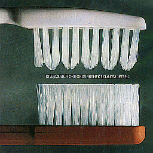
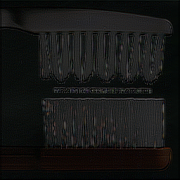
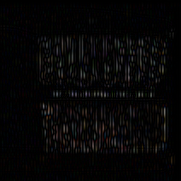
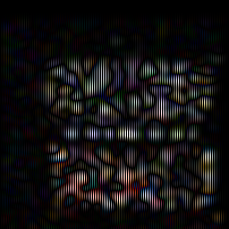

Probably the most important set of filtering operations is implemented by taking a weighted sum or difference of pixels within a neighborhood to produce each output pixel. This approach implements the mathematical concept of the convolution of two functions. The idea is easy to follow, as it can be thought of as sliding a rectangular array of weights over an image, replacing the pixel positioned at the center of the array by the appropriately weighted sum of the pixels under the array. The array of weights is commonly called the convolution kernel.
Convolution lies at the heart of any physical device or computational procedure that performs smoothing or sharpening. Applied to two dimensional functions like images, it's also useful for edge finding, feature detection, motion detection, image matching, and countless other tasks.
Unfortunately, due to time constraints, I was unable to complete a properly functioning Gabor Filter function.
The following commands can be used in the terminal for complication, execution, and clean-up.
$> make
$> filt filter.filt input.img
$> filt filter.filt input.img output.img
$> make clean
The following images have been convolved 2-3 times to better analyze the result of the convolution kernel.
Experiment: checkers.png with pulse.filt
Output: checkers_pulse.png
Result: Blurred and (maybe) added noise to the image
Experiment: checkers.png with tent.filt
Output: checkers_tent.png
Result: Blurred the image slightly
Experiment: checkers.png with hp.filt
Output: checkers_hp.png
Result: Highlighted the edges within the image
Experiment: checkers.png with sobol-horiz.filt
Output: checkers_sobol-horiz.png
Result: Highlighted the vertical lines within the image
Experiment: checkers.png with sobol-vert.filt
Output: checkers_sobol-vert.png
Result: Highlighted the horizontal lines within the image
myFilter:
[3
1 1 1
-5 0 5
1 1 1]
Result: This filter shifts the resulting image down, darkens the image, and slightly increases contrast.
Images: The following images display my results after convolution--0, 2, 10, and 35 times, respectively--using myFilter.filt on brushes.png.
   CPSC 6040: Computer Graphics Images, Ioannis Karamouzas